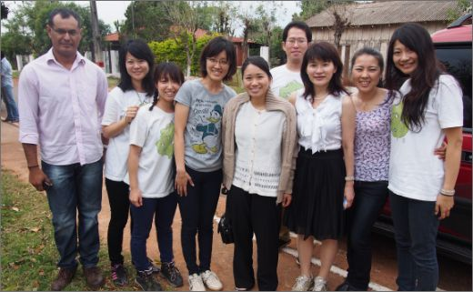
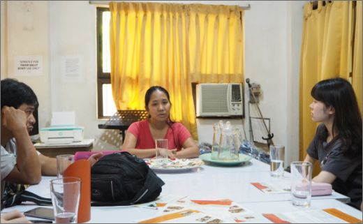

教員・学生研究紹介
Yoko Fujikake
藤掛 洋子
文化人類学（開発人類学）、
開発とジェンダー、質的評価、
パラグアイ地域研究
Q1.現在の研究テーマ（または専門分野）について教えてください。
専門は文化人類学と開発人類学、ジェンダーと開発学です。研究対象地域はラテンアメリカ諸国、特にパラグアイ共和国です。
研究テーマは、農村女性のエンパワーメントやスラムの開発支援、そして質的調査・評価です。パラグアイでは、複数のプロジェクトを実施しております。
NＧＯの立場からは「横浜国立大学ＸJICA草の根技術協力事業：パラグアイ農村女性の生活改善プロジェクト」のプロジェクトマネージャーとしてシングルマザーの生計向上・生活改善のための社会開発事業を実施しています。
http://paraguay-mujer.com
また、ＮＧＯのアクターとしても農村やスラム他でも学校建設支援や教育支援等を行っています。
http://mitai-mitakunai.com
支援が展開される当該社会において参与観察やヒアリングを行い、農村やスラムの方々の語りを現象学の立場から分析しています。貧困や豊かさとは何か、より良い生活とは何か？支援とは何かなどについて研究室のメンバーとともに常に考えています。

パラグアイ農村部における調査：
博士後期課程・前期課程･学部生たちとともに現地学校の教員や青年海外協力隊隊員の方へのインタビュー
Q2.教員になるまで、どんな学術・実務上の経験がありますか？
国際協力事業団国際協力総合研究所（現独立行政法人国際協力機構国際協力研究所）準客員研究員としてリプロダクティブヘルス/ライツや農村女性のエンパワーメントにかかる研究を行いました。
https://openjicareport.jica.go.jp/987/987/987_000_11692308.html
https://openjicareport.jica.go.jp/214/214/214_000_11737186.html
また、国際協力事業団（現国際協力機構）専門家としてパラグアイ共和国厚生省に（日米コモン・アジェンダ案件）配属され、米国開発庁と連携しパラグアイの女性たちの妊産婦死亡率を下げるための調査ならびに政策立案を行いました。
チュニジア共和国では国家人口公団においてユースのリプロダクティブヘルス/ライツにかかる調査研究を行うとともに、ペルー共和国女性人間開発省においてはペルーの男女平等法にかかる法律の制定支援を行いました。
Q3.研究指導で大切にしていることについて教えてください。
研究室の学生たちのテーマは、NPOやＮＧＯが展開する国際協力や支援の現場で生起する事象について取り扱うものが多いです。また、ジェンダー研究などもあり、幅は広いです。その中で共通するキーワードとなるのは、排除、包摂、マイノリティの人権、人々のエンパワーメントです。
理論を学ぶことも大切ですが、フィールドに出ることも大切にしています。フィールドにおける権力関係に細心の注意をはらい調査を行うこと、現場の方々に寄り添い、現場から立ち上がる事象や現場で生きる方々の声に真摯に向き合うことを大切にするように研究指導をしています。
理論では十分に掴み取ることのできないことやもの、分析することのできない事象が多々あります。フィールドに出ることは新たな知と自己と他者との出会いであり、複眼的思考の醸成にもつながります。

フィリピンのNGO職員インタビュー調査：大学院博士前期課程学生
Q4受験生へメッセージ（大学院生へ）
国際協力やジェンダー研究、マイノリティの視点に寄り添いフィールド調査を行いたい方、現象学（その流れの中にある構築主義）の立場から研究を行いたい方、一度研究室のＨＰをのぞいてみて下さい。
フィールドに出ることを通して複雑化する社会の中で求められる複眼的思考力を身につけ、理論と実践の接合（いまどきは社会実装というようです）に挑戦しましょう。「答えは現場にあり」です。